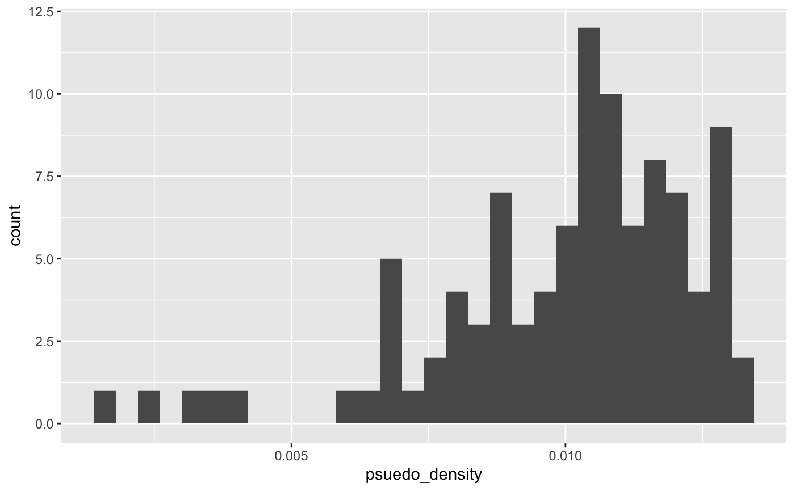
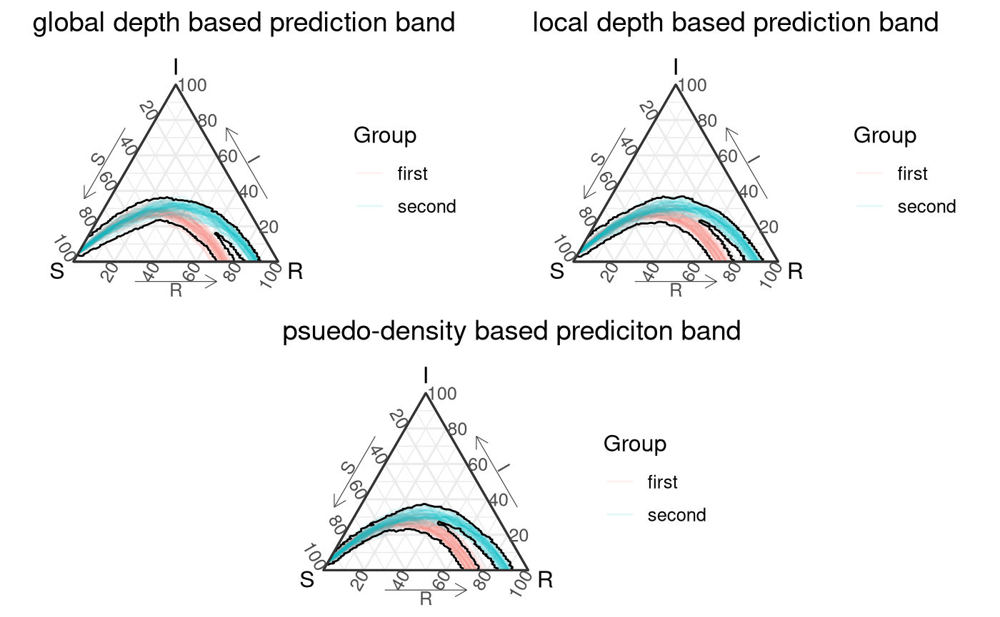
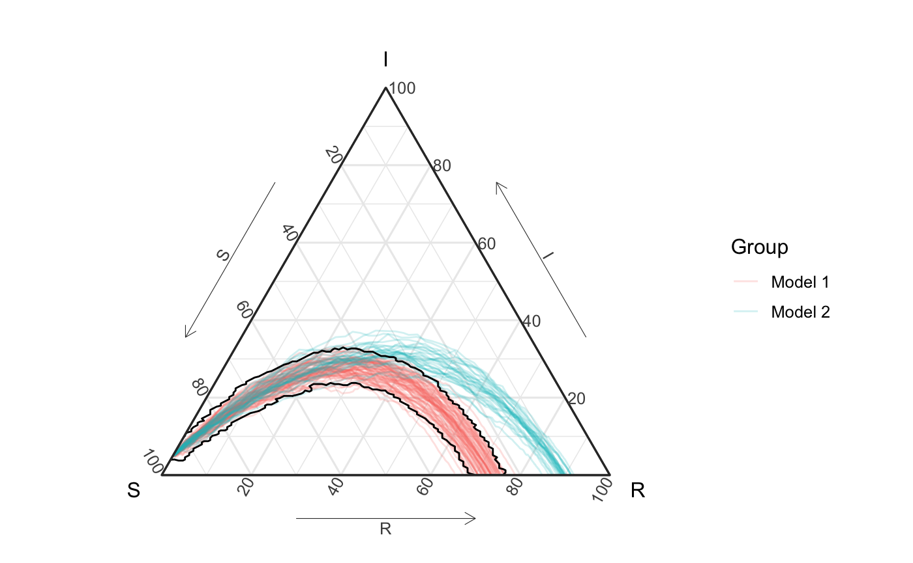
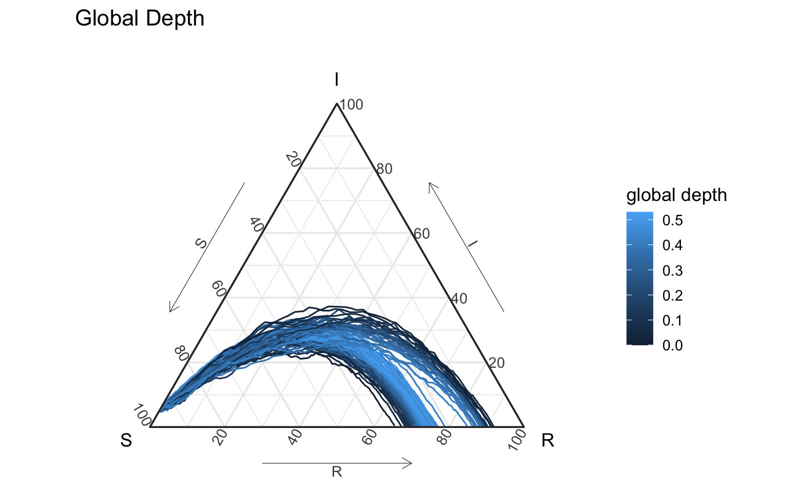
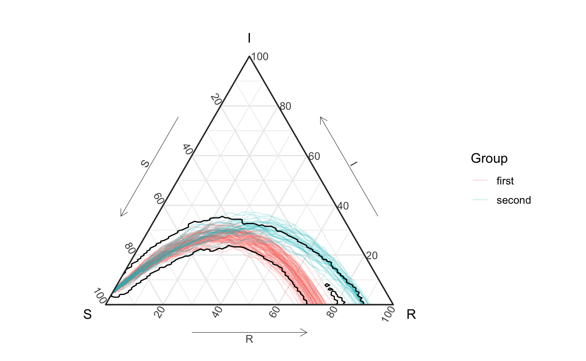
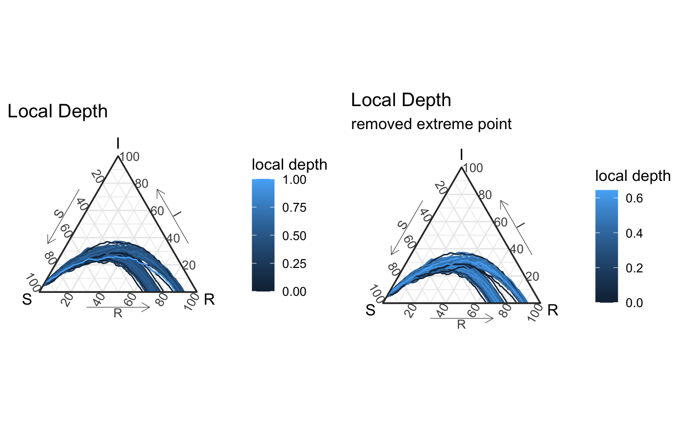
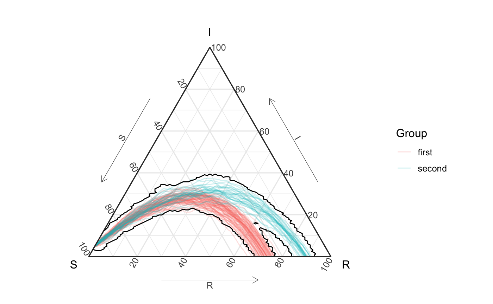
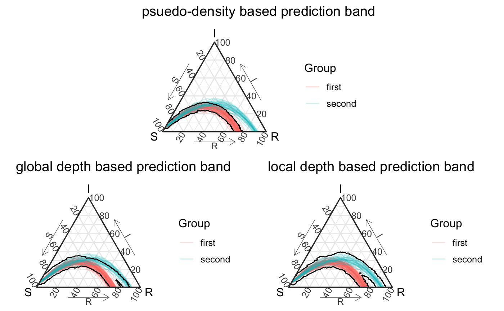

Understanding Prediction Bands and Impact of Quantile/Ordering Functions
Source:vignettes/not-built-vignettes/depths-impact-on-prediction-bands.Rmd
depths-impact-on-prediction-bands.RmdOverview
Creating prediction regions and quantifying uncertainty in epidemiological function space is a complicated endeavor. In this vignette we focus on providing the reader some background for the approach presented in this package. Although our work was is based on work in (Dalmasso, Dunn, LeRoy1, Schafer 2019), we provide more statistical grounding for our shared approaches as well as smarter approaches for simulation based prediction regions for multivariate functional data (functions with output in multi-dimensional space).
The first section of this vignette is a literature review of some useful tools and related literature to create prediction regions for Euclidean space. We focus on creating rudimentary level sets for for conditional density estimates.
The second part of this vignette demonstrates how we leverage level set estimate to define a prediction region for simulated epidemics. We demonstrate our prediction region on a mixture of SIR epidemic models, and examine different ranking/quantile functions to create a prediction region.
Section 1: An introduction to creating prediction regions with level sets
There are many ways to create prediction regions. The most famous prediction region (interval) comes from linear regression. Under assumptions about the linearity of \(y|X\) and the normality of the residuals, we can define a prediction interval for \(y_i|X_i\) as
\[ X_i^T\beta \pm z_{\alpha/2} \cdot \hat{\sigma} \sqrt{1 + X_i^T \hat{\Sigma}X_i} \;, \] which should contain \(y_i\) \((1-\alpha)100\%\) of the time.
Such a prediction region relies heavily on the strict assumptions of the linear model. It is often useful to assume less strict assumptions for the generative distribution, potentially as far as fitting some black models that return an estimate of the conditional density to \(y|x\) to define prediction regions (e.g. Izbicki and Lee 2017).
For models that can estimate conditional densities, density level sets provide a great tool to create a prediction region. Level sets are know to be the best (most efficient) prediction regions given a density is known (mentioned in passing in (Lei, Robins, and Wasserman 2013)). Although lvel ets are often visualized by just evaluating the density over a grid, there are many ways to estimate density level sets, especially when one has a sampling from the underlying distribution. (Grenander 1981; Walther 1997; n.d.), all present possible ways to use a union of balls to represent level sets for densities for simulations/random samples. Walther (1997)’s more efficient approach is visualized below in the below visuals. Our approach builds off of prediction regions through level sets from low-dimensional Euclidean space to multivariate functional epidemics.


Section 2: Prediction bands from epidemic simulations
In order to demonstrate our approaches to building prediction regions for epidemics, we start with a data example, examining the structure and then look at different approaches to contain a desired region in the space.
Data example
To understand how we create prediction regions (and a few options we provide), we will examine a generative model that sees the true epidemic comes from a mixture of these two models. Specially,
\[ \text{Epidemic} \sim .7 \cdot \text{Model}_1 + .3 \cdot \text{Model}_2 \] where \[ \text{Model}_1 = SIR(\beta = .1, \gamma = .03) \\ \text{Model}_2 = SIR(\beta = .15, \gamma = .05) \]
set.seed(11) ## first group ----------- beta <- .1 gamma <- .03 n <- 100 prop_class_1 <- .7 out <- simulate_SIR_agents(n_sims = round(.7*n), n_time_steps = 100, beta = beta, gamma = gamma, init_SIR = c(950, 50, 0)) df_group <- out %>% group_by(sim) %>% agents_to_aggregate(states = c("tI", "tR"), min_max_time = c(0,100)) %>% rename(S = "X0", I = "X1", R = "X2") ## second group ---------- beta <- .15 gamma <- .05 out2 <- simulate_SIR_agents(n_sims = round((1-.7)*n), n_time_steps = 100, beta = beta, gamma = gamma, init_SIR = c(950, 50, 0)) df_group2 <- out2 %>% group_by(sim) %>% agents_to_aggregate(states = c("tI", "tR"), min_max_time = c(0,100)) %>% rename(S = "X0", I = "X1", R = "X2") df_all <- rbind(df_group %>% mutate(id = "first"), df_group2 %>% mutate(id = "second")) df_all_vis <- df_all %>% mutate(id2 = factor(paste0(id, sim), levels = paste0(rep(c("first", "second"), each = 100), rep(1:100, length = 200)))) %>% mutate(id2 = as.numeric(id2))
The following figure shows these curves on the unit simplex. Notice that is hard for the eye to tell that the second group only contains 30% of simulations (this observation will be important later).
all_curves <- ggplot(df_all_vis) + geom_path(aes(x = S, y = I, z = R, color = id, group = id2), alpha = .2) + coord_tern() + labs(color = "Group") + theme_sir() all_curves

Distances between epidemic simulations
If we imagine each epidemic simulation as it’s own object, we can naturally imagine comparing simulations, and - if we treat these simulations like functional data, we might approach comparing the simulations with a distance metric (\(d_\mathcal{F}\) ). \(d_\mathcal{F}\) can be defined in different ways (e.g. Chiou, Chen, and Yang 2014; Chen and Müller 2012; Buchman, Lee, and Schafer 2011), For concreteness, one potential distance between multivariate random functions from Buchman, Lee, and Schafer (2011) is defined as: \[ d_\mathcal{F}(f_1, f_2) = \int_{c \in C} d_Y(\mathbf{f}_1(c), \mathbf{f}_2(c)) dc \]
This distance (if \(C\) is indexing time), doesn’t really align with our goal of “time-invariant” analysis, and we provide other distances that try to be more “time-invariant”, including \[ d_\mathcal{F}^\text{equa}(f_1,f_2,n) = \frac{1}{n} \sum_{i=1}^n d_Y(f_1(c_{1(i)}), f_2(c_{2(i)}))\;, \] where \(c_{j(i)}\) relates to equally spaced, order points along the function2.
Psuedo-density
To summarize these curves we want wish capture a representation of highly likely curves through a prediction region. Although one cannot define a density for multivariate functions, there’s a long practice of defining psuedo-densities (e.g. Ferraty, Kudraszow, and Vieu 2012; Ciollaro et al. 2014) by with kernels and the distance between observations, e.g. \[ \hat{f}(X) = \frac{1}{n}\sum_{i=1}^n K(\text{dist}(X, X_i)^2/\sigma) \;, \]
often with \(K\) being the standard Gaussian kernel. We can calculate the psuedo-density for the set of simulations, and we visualize them below. In both figures below we can see that the the estimated density for most simulations from the second mixture is above the maximum density estimated for the density from the second simulation.
Additional commentary associated with code
tidy_dist_mat…
Although not important for this vignette’s message, EpiCompare introduces a new class, tidy_dis_mat to keep track of the tidyverse grouping structure that we have relative to the simulations when we seek to understand the distances between the simulated epidemics. our tidy_dist_mat work very similar to distance matrices but also store keys of information for each row and column in the matrix akin to tidyverse style grouping. *This was mostly done as tidyverse is inconsistent in the order of their groupings group_by + nest vs group_nest/group_split/group_keys. See ?tidy_dist_mat for examples. Any function that can take in a tidy_dist_mat and also take in a “regular” `matrix.
# this requires keeping track of the names in this way (sadly) compression_df <- df_all %>% arrange(t) %>% # just to be safe dplyr::select(-t) %>% group_by(id, sim) %>% filament_compression(data_columns = c(S,I,R), number_points = 20) compression_list <- compression_df %>% group_split() compression_list_names <- compression_df %>% group_keys() dist_mat <- compression_list %>% dist_matrix_innersq_direction(position = 3:5, verbose = TRUE) tidy_dm <- tidy_dist_mat(dist_mat, compression_list_names, compression_list_names) sigma <- quantile(dist_mat, probs = .3)
psuedo_density <- distance_psuedo_density_function(tidy_dm, sigma) group_names <- names(psuedo_density)[names(psuedo_density) != "psuedo_density"] df_all_pd <- df_all_vis %>% left_join(psuedo_density, by = c("sim", "id")) %>% ungroup() %>% mutate(psuedo_density2 = cut(.data$psuedo_density, breaks = 5), id2 = factor(paste0(id, sim), levels = paste0(rep(c("first", "second"), each = 100), rep(1:100, length = 200)))) %>% mutate(id2 = as.numeric(id2))
psuedo_density %>% ggplot() + geom_histogram(aes(x = psuedo_density, fill = id)) + facet_grid(id ~.) + labs(fill = "mixture membership", x = "psuedo-density")

df_all_pd %>% ggplot(aes(x = S, y = I, z = R, color = psuedo_density, group = id2)) + geom_path() + coord_tern() + labs(title = "Psuedo Density", color = "psuedo density") + theme_sir() #> Coordinate system already present. Adding new coordinate system, which will replace the existing one.

Creating a prediction region
bBy extending off union-of-balls based level set estimation techniques as described in the first section, we try to wrap each function in a small tube to represent the level set3. The final result with the psuedo-density estimate is presented below (with a \(\alpha\) level of \(.5\)).
psuedo_density_pb <- all_curves + geom_prediction_band(data = df_all_vis, aes(x = S, y = I, z = R, sim_group = id2), pb_type = "delta_ball", conf_level = .5, dist_params = list(dist_approach = "auto", num_steps = "auto", quantile_approach = "psuedo_density", quantile_approach_params = list("sigma" = "30%"))) + coord_tern() + theme_sir() #> Coordinate system already present. Adding new coordinate system, which will replace the existing one. psuedo_density_pb #> Due to dist_params$dist_approach = "equa_dist", this may take a little while - see `filament_compression` examples for a work-around if you're making this plot multiple times

Global depth
If we look at the above confidence interval we might feel like second branch captured in the prediction region doesn’t really capture the true structure of the data in the way we want - specifically we might imagine that a more “central” curve in the second mixture should be highlighted first. Naturally, we could change the \(\sigma\) for the psuedo-density or redefine the distance function we use, but depth also provides a different way to think about the geometric structure of a distribution. At it’s core, depth focuses on defining the “centrality” of observations.
Because we have a space with a distance defined between observations we use Geenens & Nieto-Reyes’s distance depth (directly explorably with the function distance_depth_function) (Geenens and Nieto-Reyes 2017). Geenens and Nieto-Reyes (2017)’s distance depth is a global measure, and depth in general doesn’t capture density structure - so level sets aren’t the best to capture a true level set of density4. None the less, depth can be used to define an ordering / ranking of the curves to create a prediction region. Depth is a very common tool in functional data analysis. Below we present the estimated “depth” of all the simulated curves using Geenens and Nieto-Reyes (2017)’s distance depth. Note that a simulation that had a similar shape and ended with \(\approx 83\%\) in the recovery state would actually be seen as the most deep curve (and included in this prediction interval).
global_depth <- distance_depth_function(tidy_dm) df_all_gd <- df_all_vis %>% left_join(global_depth, by = c("sim", "id")) %>% rename(global_depth = depth) %>% mutate(global_depth2 = cut(global_depth, breaks = 5))
df_all_gd %>% ggplot(aes(x = S, y = I, z = R, color = global_depth, group = id2)) + geom_path() + coord_tern() + labs(title = "Global Depth", color = "global depth") + theme_sir() #> Coordinate system already present. Adding new coordinate system, which will replace the existing one.

Below you’ll see a prediction region defined by the global depth. The visualized prediction band using this global depth captures different structure of the simulations - specifically it seems to like the interior between these two groups a little bit more than what you and I might want. This is largely associated with the global nature of depth.
global_depth_pb <- all_curves + geom_prediction_band(data = df_all_vis, aes(x = S, y = I, z = R, sim_group = id2), pb_type = "delta_ball", conf_level = .5, dist_params = list(dist_approach = "auto", num_steps = "auto", quantile_approach ="depth", quantile_approach_params = list())) + coord_tern() + theme_sir() global_depth_pb

Local depth
If we are interested in highlighting “central” curves in a more local way, we can use local depth. Agostinelli & Romanazzi (2011) proposed an approach to create local depth, and we have extended their ideas to Geenens & Nieto-Reyes into a local distance based depth (directly explorably with the function local_distance_depth_function) (Agostinelli and Romanazzi 2011). Agostinelli and Romanazzi (2011) recommended a localized parameter \(\tau\) around the 20-30% quantile of the distance distribution - which we explore here.
Tau selection
quantile(dist_mat,probs = 0:10/10) %>% round(2) %>% t %>% data.frame(check.names = F) %>% DT::datatable(options = list(dom = 't'))
tau <- quantile(tidy_dm,probs = .30)["30%"] tidy_dm %>% c() %>% data.frame(dist = .) %>% ggplot(aes(x = dist)) + geom_histogram(bins = 30) + geom_vline(xintercept = tau)

Unlike the global depth, local depth “localizes” what it means to be central. It’s not the same as a density estimate (see vignette for Euclidean examples), the below visual of this local depth emphasises that we’re not focused as much at the probablistic level, but given the local nature of the the approach we might expect the union of balls to better capture the level set structure of local depth.
local_depth <- local_distance_depth_function(tidy_dm, tau = tau)
all_vis <- df_all_ld %>% ggplot(aes(x = S, y = I, z = R, color = local_depth, group = id2)) + geom_path() + coord_tern() + labs(title = "Local Depth", color = "local depth") + theme_sir() #> Coordinate system already present. Adding new coordinate system, which will replace the existing one. all_vis_minus1 <- df_all_ld %>% filter(local_depth != 1) %>% ggplot(aes(x = S, y = I, z = R, color = local_depth, group = id2)) + geom_path() + coord_tern() + labs(title = "Local Depth", color = "local depth", subtitle = "removed extreme point") + theme_sir() #> Coordinate system already present. Adding new coordinate system, which will replace the existing one. grid.arrange(all_vis, all_vis_minus1, nrow = 1)

We can then create prediction regions using this local depth, below are the visuals from such an approach. Notice that it doesn’t agree with the pseudo-density approach, but better captures the central portion of each mixture.
local_depth_pb <- all_curves + geom_prediction_band(data = df_all_vis, aes(x = S, y = I, z = R, sim_group = id2), pb_type = "delta_ball", conf_level = .5, dist_params = list(dist_approach = "auto", num_steps = "auto", quantile_approach ="local_depth", quantile_approach_params = list(tau = "30%"))) + coord_tern() + theme_sir() local_depth_pb

Wrap-up
Overall, we have presented 3 ways to use different rank / orderings of epidemic simulations to create prediction regions. Although we’ve demonstrated they all capture different geometric structures we hope they can demonstrate different ways to represet simulation’s structure and our uncertainty about complex epidemic systems and our attempts to represent them. The figure below shows these different approaches for our rather contrived confidence level of \(1-\alpha = .5\).
layout_mat <- matrix(c(rep(c(4,4, rep(3,4), 4,4), 4), rep(c(rep(1,4), rep(2, 4)),4)), nrow = 8, byrow = T) grid.arrange(global_depth_pb + labs(title = "global depth based prediction band"), local_depth_pb + labs(title = "local depth based prediction band"), psuedo_density_pb + labs(title = "psuedo-density based prediction band"), ggplot() + theme_minimal(), layout_matrix = layout_mat)

For examples of tools in our package that work for higher dimensional epidemic models please see Comparing Models (to Models) and Epidemics (to Models). Our vignette on the differences between density estimates and depth (local and global) may also help aid your understanding of the differences between these ordering approaches.
References
Agostinelli, Claudio, and Mario Romanazzi. 2011. “Local depth.” Journal of Statistical Planning and Inference 141 (2): 817–30. https://doi.org/10.1016/j.jspi.2010.08.001.
Buchman, Susan M., Ann B. Lee, and Chad M. Schafer. 2011. “High-dimensional density estimation via SCA: An example in the modelling of hurricane tracks.” Statistical Methodology 8 (1): 18–30. https://doi.org/10.1016/j.stamet.2009.07.002.
Chen, Dong, and Hans Georg Müller. 2012. “Nonlinear manifold representations for functional data.” Annals of Statistics 40 (1): 1–29. https://doi.org/10.1214/11-AOS936.
Chiou, Jeng Min, Yu Ting Chen, and Ya Fang Yang. 2014. “Multivariate functional principal component analysis: A normalization approach.” Statistica Sinica 24 (4): 1571–96. https://doi.org/10.5705/ss.2013.305.
Ciollaro, Mattia, Christopher Genovese, Jing Lei, and Larry Wasserman. 2014. “The functional mean-shift algorithm for mode hunting and clustering in infinite dimensions” 1 (Figure 2). http://arxiv.org/abs/1408.1187.
Dalmasso, Niccolò, Robin Dunn, Benjamin LeRoy, and Chad Schafer. 2019. “A Flexible Pipeline for Prediction of Tropical Cyclone Paths.” ICML Workshop: "Climate Change: How Can AI Help?". http://arxiv.org/abs/1906.08832.
Ferraty, Frédéric, Nadia Kudraszow, and Philippe Vieu. 2012. “Nonparametric estimation of a surrogate density function in infinite-dimensional spaces.” Journal of Nonparametric Statistics 24 (2): 447–64. https://doi.org/10.1080/10485252.2012.671943.
Geenens, Gery, and Alicia Nieto-Reyes. 2017. “On the functional distance-based depth.”
Grenander, Ulf. 1981. Abstract inference. New York: Wiley-Interscience.
Izbicki, Rafael, and Ann B. Lee. 2017. “Converting high-dimensional regression to high-dimensional conditional density estimation.” Electronic Journal of Statistics 11 (2): 2800–2831. https://doi.org/10.1214/17-EJS1302.
Lei, Jing, James Robins, and Larry Wasserman. 2013. “Distribution-free prediction sets.” Journal of the American Statistical Association 108 (501): 278–87. https://doi.org/10.1080/01621459.2012.751873.
Walther, Guenther. 1997. “Granulometric smoothing.” Annals of Statistics 25 (6): 2273–99. https://doi.org/10.1214/aos/1030741072.
n.d. In.
Ben is a coauthor in this paper.↩︎
In line with treating the function as a filament.↩︎
This is approximated by what (Dalmasso et al. 2019) describes as the \(\delta\)-ball approach, but with a more statistically valid approach using the psuedo-density.↩︎
See Figure 2 in Lei, Robins, and Wasserman (2013) for a Euclidean comparison of global depth vs density↩︎